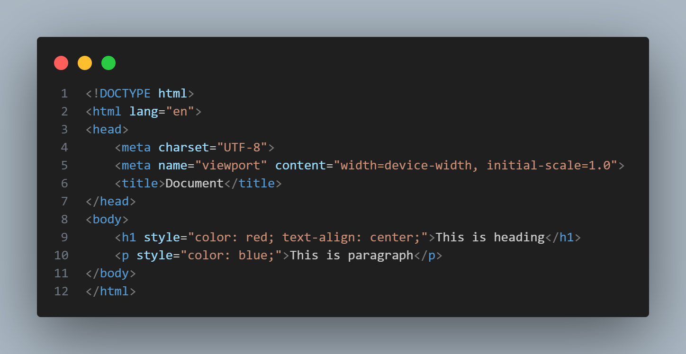
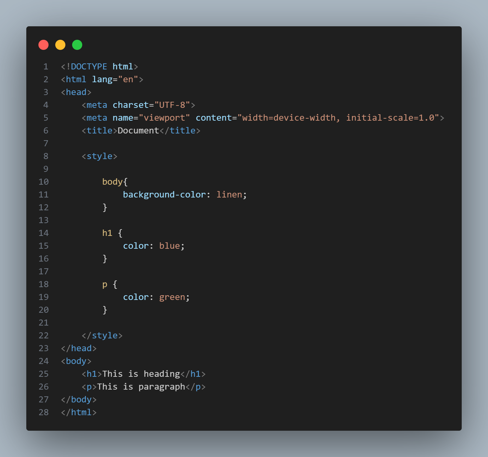
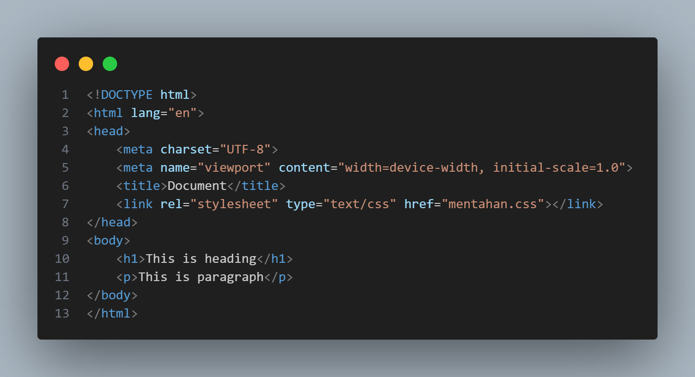

CSS (Cascading Style Sheets)
Apa itu CSS?
Dikutip dari W3Schools.com, CSS adalah:
- CSS adalah singkatan dari Cascading Style Sheets
- CSS dapat menjelaskan bagaimana elemen HTML ditampilkan di layar, kertas, atau media lainnya
- CSS bisa menghemat banyak pekerjaan.
- CSS dapat mengontrol tata letak beberapa halaman web sekaligus.
Adapun Syntax CSS pada elemen Heading nya yaitu:
Keterangan:
- Color adalah jenis properti yang digunakan untuk pemilihan warna pada font yang akan ditampilkan.
- Blue adalah jenis value yang digunakan untuk memberi warna pada font yang akan ditampilkan.
- font-size adalah jenis properti yang digunakan untuk mengatur ukuran pada font yang akan ditampilkan.
- 12px adalah jenis value yang digunakan untuk mengetahui ukuran dari font yang akan ditampilkan.
Penyisipan CSS
- Inline
- Internal
- External
- Urutan prioritas CSS adalah Inline, Internal, Eksternal.
1. Inline
Inline adalah penyisipan CSS yang berada di dalam tagname html.
contoh:

.png)
2. Internal
Internal adalah penyisihan CSS yang berada di luar tagname tetapi masih di dalam ekstensi html.

.png)
3. External
External adalah penyisihan CSS dengan cara membedakan ekstensi filenya, dari ekstensi .html ke .css

.png)
.png)